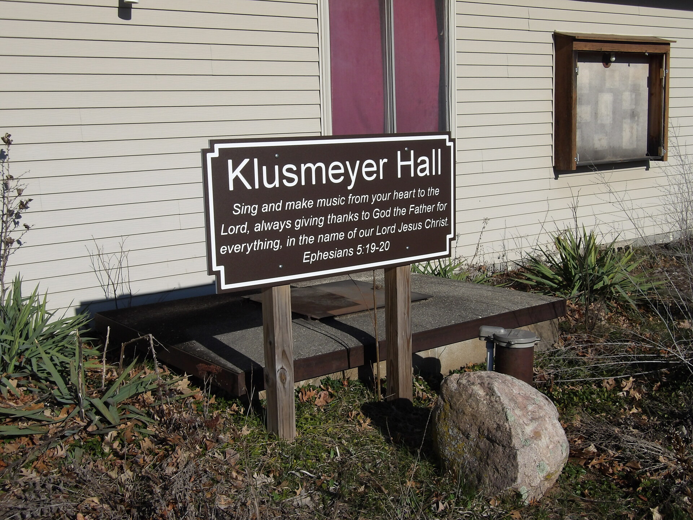

A collection of songs sung at Camp Phillip in Wautoma Wisconsin. All of the YouTube links on this webpage have been archived on Archive.org for preservation purposes.
Oh Deer
A Place in the Choir
Christmas at Camp
Hymns for Him
Hymns for Him 2
Melons, Crocodiles, & Comfort
TheME Songs
Wondrous Love
Misc Camp Phillip Songs

The Dining Hall at Camp Phillip